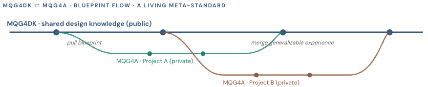
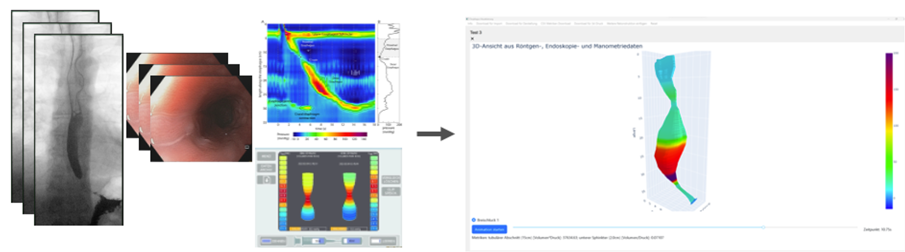
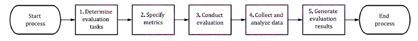
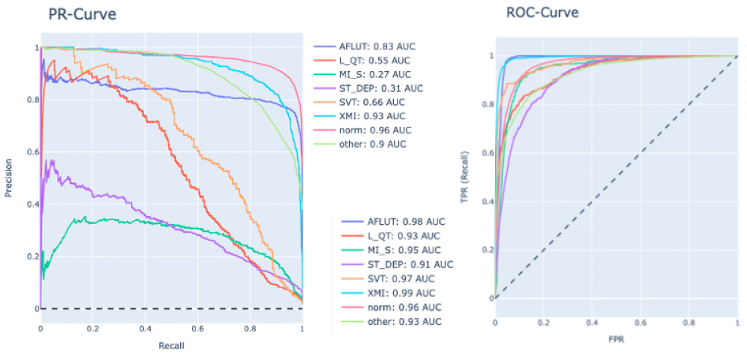
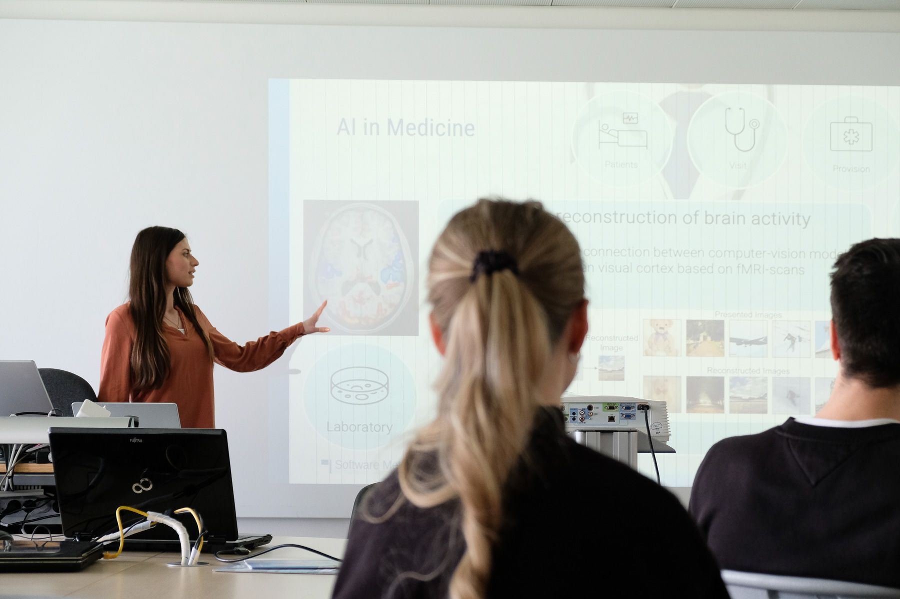
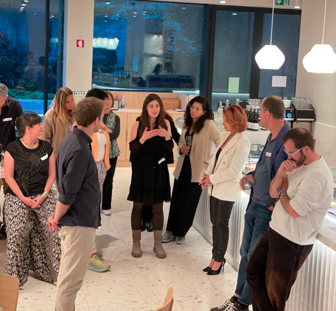

I am a multidisciplinary scientist and systems thinker specializing in trustworthy AI, with a focus on how high-risk AI systems are designed, evaluated, and governed: from regulatory frameworks like the EU AI Act to the production environments organizations operate.
What drives my work is turning fragmented information, uncertainty, and emerging technologies into structured, usable, and responsible systems, particularly around human-AI collaboration, lifecycle thinking, and knowledge infrastructure.
Alongside my technical background in Python and machine learning ecosystems, I actively design AI-augmented workflows (Claude, ChatGPT, Obsidian, custom-built systems) to support research, synthesis, strategic thinking, and knowledge management practices.
Based in Munich, I work internationally across Europe with growing interests in Southeast Asia. I enjoy collaborating across disciplines, cultures, and sectors, especially where technology, strategy, and human systems intersect.
Selected Work
01
MQG4AI: Methodology based on Quality Gates towards Certifiable AI in Medicine
PhD dissertation · University of Augsburg · 2021 – 2025

MQG4AI as a living meta-standard: a shared design-knowledge backbone (MQG4DK) feeds private project instances (MQG4A), which in turn merge generalizable experience back into the public layer.
Challenge
Guidance for high-risk AI systems is fragmented and constantly evolving. The EU AI Act introduces mandatory quality management, risk documentation, and human oversight requirements, yet no unified structure bridges these obligations with technical standards and existing practice. Teams rarely have a single place to integrate compliance, ethics, risk management, and implementation guidance.
Approach
At its core, MQG4AI is a dual system for continuous, decentralized knowledge updates, an information-management structure built on flexible Quality Gates as a living meta-standard, bridging to concrete use cases. The methodology combines technical rigor with risk awareness and human oversight (directly addressing EU AI Act Article 17 quality management obligations, with particular emphasis on Article 9 risk management system, grounded in the seven HLEG criteria for Trustworthy AI), making contextual and lifecycle interdependencies transparent.
Application
Developed using Design Science Research, MQG4AI was illustrated through three concrete cases: ECG metric selection in emergency medicine (a high-risk use case under EU AI Act Annex III), exemplifying alignment with ISO/IEC TS 4213 and EU AI Act Article 9 risk management requirements and showing how to design generalizable guidance as lifecycle templates; the TBE-image segmentation model selection scenario embedded in EsophagusVisualization, illustrating lifecycle evolution and versioning within MQG4AI; and explainability Quality Gates aligned with the IEEE Framework for Explainable AI, deriving a workflow for designing generic lifecycles with technical guidance for LIME/SHAP evaluation.
Why it mattersHelps organizations operationalize responsible AI in evolving regulatory and clinical environments, without rebuilding their methodology every time the standards shift.
EsophagusVisualization: Clinical Software for a Rare Disease
Project lead · University of Augsburg & University Hospital · 2021 – present

From fragmented multi-modal esophageal imaging to an integrated, clinically validated 3D reconstruction.
Challenge
Diagnosis and research in achalasia (a rare esophageal disease) was hampered by fragmented imaging modalities and no integrated 3D representation across them. Clinicians and researchers had no shared tool to combine modalities, annotate cases, and reason about treatment outcomes.
Approach
I led the conceptualization, development, and clinical deployment of EsophagusVisualization: an open-source tool pairing a Python GUI (PyQt) for human-in-the-loop data management with a numerical processing pipeline (NumPy, SciPy) and interactive 3D rendering (Plotly). I mentored and worked alongside computer science students who drove much of the technical implementation; their work is at the heart of this tool. In close coordination with clinicians and ethicists, the tool was aligned with both clinical needs and ethical considerations.
The architecture supports clinically validated 3D-reconstructions from multi-modal esophageal imaging data, with a human-in-the-loop workflow, an embedded segmentation model, a structured database, and 3D-printable mesh exports.
Public Engagement
Project-based teaching is a method I strongly believe in, and this work has been a central vehicle for it. Together with the student team, we shared the project at the Long Night of Science 2024 for the general public and at Königsbrunner Campus for Achalasia patients and their families on embedded ethics and AI-driven medical research.
Outcomes
Deployed at the University Hospital of Augsburg and adopted in active medical research. Featured as a use case for the MedAIcine project at the Center for Responsible AI Technologies. Multiple associated publications, a forward AI roadmap, and a journal paper in editorial process.
Why it mattersReduces patient burden by replacing repeated multi-modal diagnostics with a single integrated 3D view, freeing scarce hospital resources and giving clinicians a clearer basis for treatment decisions.
LIFEDATA project · with corpuls and German Heart Center of TU Munich · 2022 – 2023

Process steps for performance assessment, as introduced in ISO/IEC TS 4213.
Challenge
Standard ML evaluation methods fall short for ECG analysis in emergency medicine, where false negatives carry life-or-death consequences and label imbalance is structural rather than incidental. Multi-label correlations between heart arrhythmias further complicate which metrics reliably reflect actual clinical performance.
Approach
As part of the LIFEDATA project (with medical product manufacturer corpuls and the German Heart Center of TU Munich, and with an anesthesiologist as clinical co-lead) I implemented a domain-embedded strategy for multi-label ECG performance metric selection. The procedure is structured into pre-, intra-, and post-selection steps, combining cost-sensitive post-processing thresholding (CIST), a Benefit-Matrix co-developed with the clinical expert to encode label correlations, and macro-averaged multi-label metrics that keep rare but clinically meaningful labels visible. To support clinical adoption, I also facilitated a knowledge-transfer workshop with hospital domain experts.
Finding
A central empirical finding: for heavily imbalanced multi-label ECG data, ROC AUC displayed overly optimistic behavior across labels, masking the model's true performance. PR AUC and F1-Score tell a more honest story. Treated as a generalizable lesson, this and the broader procedure align with ISO/IEC TS 4213 and are embedded as a Quality Gate Metrics contribution within MQG4AI, extendable to other multi-label medical use cases.

Empirical evidence: on heavily imbalanced multi-label ECG data, the ROC curves (right) appear uniformly strong, while the PR curves (left) reveal the model's true per-label performance.
Outcomes
Paper presented at IEEE EAIS 2024 (Madrid). Methodology integrated as a concrete use case in the Quality Gates dissertation. Experiments published on Zenodo for open reuse.
Why it mattersGives high-stakes ML teams a defensible, standards-aligned process for selecting evaluation metrics, with emergency medicine as the embedded use case where misleading defaults can quietly compromise clinical decision-making.
Trustworthy AI across audiences · University of Augsburg & beyond · 2023 – present

Guest lecture on AI in Medicine, translating technical research into accessible insight.
Context
Responsible AI requires literacy and trust beyond the lab. Building both means meeting people where they are: patients, students, lawyers, religious communities, the general public. The work is to translate technical ideas into something accessible, relevant, and genuinely engaging.
On the STEM education side, I helped build an internal infrastructure connecting the Faculty of Applied Computer Science with regional schools: workshops on machine learning in medicine, on risk management thinking adapted from the HLEG ALTAI criteria for school audiences, the AI_ME Reels series for social-media-native science communication, and recurring contributions to Career Day at Rudolf-Diesel Gymnasium, Day of Computer Science, and Insights into Research and Education. In parallel, I instantiated and ran the chair's institutional LinkedIn presence as a deliberate channel for ongoing research visibility.
Outcomes
Audiences ranging from 20 to 100+ across in-person events, social media, panels, and academic guest lectures. Sustained academic–community framework still active. Reflected on as a dedicated chapter in the dissertation.
Why it mattersAI adoption stalls when stakeholders can't access the reasoning. Building literacy across communities is how trustworthy AI moves from policy and principle into actual practice.
Female High-Potentials Mentorship Program · University of Augsburg · 2023 – 2025

Cross-sector exchange in Lisbon: the relational work behind interdisciplinary research.
Context
Responsible AI is interdisciplinary by definition. It requires sustained relationships across academia, industry, policy, and (clinical) practice. Building those relationships deliberately, across borders, has been a parallel thread alongside my technical and research work.
Practice
Through the Female High-Potentials Mentorship Program at the University of Augsburg I engaged in two years of structured leadership development and cross-border exchange, including Bridging Academia & Business in Lisbon and Interdisciplinary Exchange with Legal Scholars at IDHEAP Lausanne. In parallel, I have represented my research at international conferences in Madrid, Rome, Göteborg, and Cartagena, and regularly participate in events such as the Bavarian AI Innovation Accelerator in Munich (2025) on AI Act conformity. In 2026, I extended this exchange into Singapore and Vietnam through direct engagement with the Southeast Asian AI ecosystem.
Outcomes
A lasting cross-border professional network across Europe and Southeast Asia, spanning research, business, policy, and clinical practice.
Why it mattersThe most consequential AI work happens at interdisciplinary, cross-border intersections, and those connections don't form themselves. Sustained, deliberate relationship-building is part of the job.